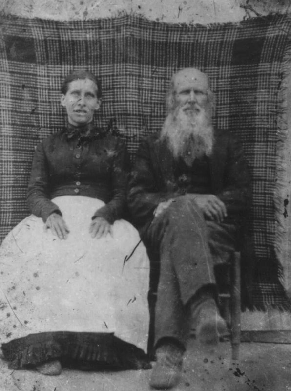
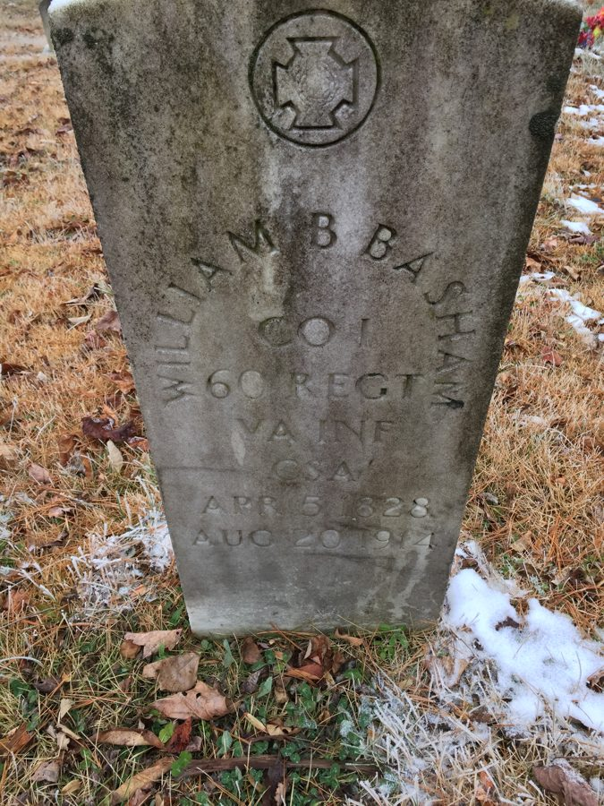

Basham line · Ellison Ridge, Summers County, West Virginia
Profile status: SUPPORTED
Quick Facts
Born
5 April 1828, Giles County, Virginia SUPPORTED (compilation: the trees and the county history agree on day, year, and county. No civil birth record exists or can exist — Virginia systematic birth registration began 1 June 1853 — so the exact day rests on compilation only. The Basham family Bibles at the Virginia Museum of History & Culture, the top unviewed lead for the date, have not been read)
Died
20 August 1914, age 86 SUPPORTED (the date is triple-agreeing across the trees and the county history, and the stone gives the same dates. The place of death is unproven: one tree source says Mercer County, another says Suck Creek in Summers County, and the memorial says Summers County — and no 1914 death-register entry for him exists in the West Virginia index. Panther Knob is the cemetery’s hilltop, not a death place)
Married
Juliana Lydia Lilly, 5 June 1856, Mercer County, Virginia DOCUMENTED (marriage register image, line 13: the groom is written “Bapham”, aged 27, widowed, mother Rhoda Basham; the bride 20, parents “J. & Polly Lilly”; minister Rev. J. C. Hubbard. He also married Mary Elizabeth (or Margaret) Peters about 1849 — no record found — and Elizabeth “Bettie” Cooper on 27 February 1893 in Raleigh County, by licence image)
Occupation
Farmer SUPPORTED (censuses 1850–1910; the county history’s “Uncle Billy: farmed in Mercer, Summers, and Wyoming Counties”. His farm on Ellison Ridge, “including Panther Knob”, rests on the county history alone — no deed has been found)
Military
Local tradition only UNPROVED (Miller’s county history (1908) lists “Wm. Basham, Capt. George, Gen. McCausland’s Div.” among the Jumping Branch men, with no regiment, rank, or company; Hatcher (1968) repeats the McCausland / Captain George pairing. No enlistment, muster roll, service record, or pension has been found. The “Private, Company I, 60th Virginia Infantry” label on his tree profile is unsourced there — Miller assigns Company I, 60th Virginia to Captain White G. Ryan’s men, and the only Basham the National Park Service returns for that company is Anderson Basham, a different man. The 1910 census carries no veteran mark for him)
Buried
Basham Cemetery, Ellison, Summers County, West Virginia SUPPORTED (memorial 8218939; the cemetery is also called the Ali Lilly Cemetery. A second memorial entry, “Basham Family Cemetery, Suck Creek”, is favoured to be a different ground — the question is open)
Residence
Ellison Ridge, Jumping Branch District, Summers County, West Virginia SUPPORTED (censuses: Jumping Branch 1900, Ellison 1910; Barkers Ridge, Wyoming County, 1870 and 1880)
Immediate Family
Parents
Rhoda Basham (mother) SUPPORTED Father unknown UNPROVED
Rhoda is named as William’s mother in the 5 June 1856 Mercer County marriage register, which names no father. The trees carry James Eber Wiley as his father, but no record names him: Miller’s 1908 sketch of Eber Willey names no Rhoda, no William, and no Basham. The Basham family Bibles at the Virginia Museum of History & Culture — the top lead on the father — have not been read, and no Giles or Monroe County court minute naming a father has been found. Rhoda married Robert Pack in 1829, the year after William was born; whether she was unmarried at his birth rests on two unproved dates. The full conflicts are in Research Notes.
Spouse
Juliana Lydia Lilly (born 28 June 1835; died 9 May 1891), married 5 June 1856, Mercer County, Virginia DOCUMENTED
His second wife. He married first Mary Elizabeth (or Margaret) Peters about 1849 — no record found; she died 17 February 1856, leaving four small children. He married third Elizabeth “Bettie” Cooper on 27 February 1893 in Raleigh County, by licence image; the licence year is written with a 3 corrected over a 2, so the marriage is 1893, not 1892 as the older transcription reads.
Children
Julia Ann Basham Shrewsbury (born 18 July 1850; died 24 December 1902; married James W. Shrewsbury 24 August 1871) SUPPORTED Nancy Jane “Nannie” Basham Clendenen (born 8 February 1852; died 10 November 1930; married A. Clendenin, given name unknown) SUPPORTED James Preston Basham (born 22 April 1853; died 25 September 1923; married (1) Mary Elizabeth Hornsby 1874, (2) Easter Watkins 1895, (3) Virginia B. Wood 1902) DOCUMENTED Elizabeth Louisa “Lizzie” Basham (born 17 March 1854 or 1855; died 24 April 1930; married (1) John S. Solesbury / John Burl Shrewsbury 1874, (2) John R. Buckland 1905) SUPPORTED John Albert Basham (born May 1856; died 3 July 1915; married Amanda Catherine Pittman 15 April 1876) SUPPORTED Henry Johnson Basham (born 1 July 1858; died 1915; married a Pettery / Pettrey, unnamed) UNPROVED Armita Caroline Basham McKinney (born 7 February 1860; died 30 July 1923; married Luke McKinney 31 August 1876) SUPPORTED Margaret Lucinda Basham McKinney (born 11 June 1861; died 12 February 1914; married Rev. Allen Marshall McKinney 1877) SUPPORTED Rosabelle Lee Basham Lusk (born 14 April 1862 or 1863; died 1891; married A. Lusk) UNPROVED William J. Basham (born 5 May 1865; died young) UNPROVED Robert Hugh Basham (born 15 August 1866 or 1867; died 24 May 1952; married (1) May Martin 1887, (2) Sarah M. Hatcher 1891) SUPPORTED Isaac Edmond Basham (born 23 May 1869; died 21 January 1912; married (1) Malinda Elizabeth Harvey, (2) Sarah Margaret Farley) SUPPORTED Sylvanus Eanon “Enon” Basham (born 23 November 1870; died in Michigan, date unknown; married Emma Pack 9 January 1902) SUPPORTED Virginia A. Basham (born 6 November 1872; died young) UNPROVED Louanna A. Basham (born 6 July 1875; died 1951?; married (1) John Halm, (2) Steve Loren — both unproved) UNPROVED Aden Lewis Basham (born 11 December 1877; died 5 January 1967; married Ollie Via Pack 29 January 1902) SUPPORTED
Margaret Lucinda is the direct line. The first four children are Mary Peters’s; the twelve after are Julina’s. Geni wrongly assigns James Preston and Lizzie to Julina — all four 1850–1854 children belong to Mary Peters. John Albert was born in May 1856, a month before his parents married. William Joseph and Virginia Alifare appear on FamilySearch only, absent from the 1870 and 1880 households. Henry Johnson, born 1 July 1858, does not appear in the 1860 household. Julia Ann’s death is carried as 24 December 1902; FamilySearch gives 1911. FamilySearch IDs: Julia Ann KWV7-DG5; Nancy Jane K23G-T7R; James Preston K2XD-P57; Elizabeth Louisa KJZ6-GW8; John Albert K26Y-JJS; Henry Johnson 9VHL-T9B; Armita Caroline 9FMH-T2C; Margaret Lucinda LHQT-BGM; Rosa Belle 9J39-KYK; William Joseph K26Y-JRQ; Robert Hugh LLM4-3RK; Isaac Edmond K26Y-JB6; Sylvanus Eanon K26Y-VMV; Virginia Alifare K26Y-V9L; Louanna Arabeth L4QC-V4H; Aden Lewis L7NV-2KJ.
Siblings
Rebecca Pack (married Jessie Ferguson) SUPPORTED Nancy Pack (married Lee Wills) SUPPORTED Amy Pack (married Anderson Pack) SUPPORTED Malinda Pack (married Vandalia Harvey) SUPPORTED Virginia Pack (married John Wills) SUPPORTED Isabelle Pack (born 20 March 1863) UNPROVED
Half-siblings by their shared mother Rhoda Basham, as listed by Hatcher (1968) for Robert Pack × Rhoda Basham. Isabelle’s placement is implausible as stated: Rhoda, born about 1812, would have been 51 at Isabelle’s birth in 1863, so Isabelle had a different mother, or Rhoda’s birth year is wrong, or Hatcher conflated households. One tree profile lists a fuller set of ten Pack children, and FamilySearch lists twelve under a Wiley × Rhoda couple — both are unproved as a roster and are not carried here. The “Pack half-siblings” list that names Justus and Nancy is wrong as labelled: Justus and Nancy are listed as Eber Willey × Rebecca Maddy’s children, not Pack children. No sibling has a profile page, so no sibling name is linked here.
5 April 1828 · age 0
Born, Giles County, Virginia SUPPORTED (compilation; no civil birth record can exist)
About 1849 · age 21
Married Mary Elizabeth (or Margaret) Peters, Mercer County UNPROVED (no record found; the name form is unresolved)
1850 · age 22
Census, Mercer County, Virginia: “William Bapham”, 22, farmer, with wife Mary, 22, and James Peters, 21, labourer DOCUMENTED (image read; daughter Julia Ann, born 18 July 1850, is correctly absent — born after the 1 June census reference date)
5 June 1856 · age 28
Married Julina Lydia Lilly, Mercer County DOCUMENTED (marriage register image, line 13; groom written “Bapham”; widowed, mother Rhoda Basham)
1860 · age 32
Census, Mercer County, Virginia: William 32, Julina 22, Julia A. 9, Nancy J. 8, James P. 7, Eliza 5, Albert 3 DOCUMENTED (image read)
1861–1865 · age 33–37
Local tradition places him in Confederate service under Captain George, General McCausland’s division UNPROVED (no rank, company, or regiment)
1870 · age 42
Census, Barkers Ridge, Wyoming County: “William Bascam” with Julina and ten children at home — twelve persons in all DOCUMENTED (image read)
1880 · age 54
Census, Barkers Ridge, Wyoming County: Wm. 54, Julina 45, Robt. H. 13, Isaac E. 11, Sylvanus E. 9, Louisa A. 5, Aden L. 2 DOCUMENTED (image read)
9 May 1891 · age 63
Julina died, Summers County SUPPORTED
27 February 1893 · age 64
Married Elizabeth “Bettie” Cooper, Raleigh County DOCUMENTED (licence image; minister A. M. McKinney, at the bride’s father’s residence)
1900 · age 73
Census, Jumping Branch, Summers County: William 73, Elizabeth 45, son Aden L. 22; married seven years DOCUMENTED (image read)
1910 · age 83
Census, Ellison, Summers County: William M. 83, father in son Aden’s household, with Elisabeth 54 DOCUMENTED (image read; the veteran-status column carries no mark for him)
20 August 1914 · age 86
Died, place unproven SUPPORTED (the date; no death-register entry found)
Burial
Basham Cemetery, Ellison, Summers County SUPPORTED
Life Story
William Blaine Basham was born 5 April 1828 in Giles County, Virginia, the son of Rhoda Basham; his father is unknown. He married three times: Mary Elizabeth — or Margaret — Peters about 1849, who died in February 1856 leaving four small children; Julina Lydia Lilly on 5 June 1856 in Mercer County; and Elizabeth “Bettie” Cooper on 27 February 1893 in Raleigh County. Sixteen children are carried, four by his first wife and twelve by Julina. He farmed on Ellison Ridge, in the Jumping Branch and Ellison country of what became Summers County, and the censuses find him there from 1850 through 1910.
The censuses trace the household: 1850 in Mercer County as “William Bapham” with his first wife Mary; 1860 with Julina and the five oldest children; 1870 at Barkers Ridge in Wyoming County with twelve in the household; 1880 still at Barkers Ridge; 1900 at Jumping Branch with his third wife Elizabeth; 1910, aged 83, living in his youngest son Aden’s household at Ellison. He could not read or write — the census marks say so in 1850, 1900, and 1910 alike.
His war service, if it happened, is carried as local tradition only. Miller’s county history lists “Wm. Basham” among the Jumping Branch men serving under Captain George in General McCausland’s division, and Hatcher repeats the pairing — but neither gives a regiment, a rank, or a company, and no enlistment, muster roll, service record, or pension has been found for him. The “Private, Company I, 60th Virginia Infantry” label on his tree profile is unsourced there: Miller assigns Company I, 60th Virginia to Captain White G. Ryan’s men, and the only Basham the National Park Service returns for that company is Anderson Basham, a different man. The 1910 census carries no veteran mark for him.
His son by Julina, Sylvanus Eanon — called Enon — is the one Miller says broke into the Jumping Branch post office while Augustus C. Young was postmaster, served a term of years in the penitentiary, and was arrested by his brother Robert H. Basham. Miller’s own sentence dates the appointment impossibly — “1903 … under Cleveland’s administration … until McKinley came into office” — so the episode is carried without a year, plausibly 1893–1897, and on Miller alone: no court, penitentiary, or newspaper corroboration has been found.
William died 20 August 1914, aged 86. Where he died is not settled — the trees say Mercer County, Suck Creek, and Panther Knob, and the death register has no 1914 entry for him — and he is buried in the Basham Cemetery at Ellison, under a stone that reads his name, his company and regiment, and his dates. His daughter Margaret carries the line, marrying the Reverend Allen Marshall McKinney in 1877. No portrait of William was known until the captioned portrait on his memorial was read: an elderly bearded man, seated, captioned “William Blain Basham / Private Company I / 60th Virginia Infantry / b. April 5, 1828 / d. August 20, 1914” — the identity rests on that caption and the memorial attribution, not on a record.
Photo Gallery

Elizabeth Cooper and William Blaine Basham

Gravestone of William B. Basham
Sources and Evidence
Mercer County marriage register, 1856, p. 3, line 13 (West Virginia Vital Records Id 12149071 — image read): “June 5th [1856] Mercer — William Bapham x Julina Lilly — 27 [yrs] 10 [mos] — 20 [yrs] 11 [mos]” DOCUMENTED (register image; the groom’s surname is written “Bapham”)
Raleigh County marriage licence, 1893, p. 282 (VRR Id 11511036 — image read): “Mr. William Basham and Miss Elizabeth Cooper”; issued 7 February 1893 by George Bailey, Clerk, County Court of Raleigh County — the year written “1893” with the “3” appearing corrected over a “2”; minister’s return: “I, A. M. McKinney, a Minister of the Gospel, do certify, that, on the 27th day of February 1893, at the residence of the Bride father, I united in marriage the above-named and described parties”; his age 64, her age 37; informant Lewis P. Cooper, her father DOCUMENTED (licence image)
Rhoda Basham Pack death register, 1877 (VRR Id 5932481 — image read): Summers death register, “Register of Deaths within the District of John Lilly”, p. 16, entry 39: “Pack Rhoda — Sept. 24 — age 69”; spouse Robert Pack, father Wm. Basham DOCUMENTED (register image)
United States census 1850, Mercer County, Virginia, 1st District, M432 roll 960 (FamilySearch ark S3HT-6S77-DD6, image 28 of 99 — image read): House 183, surname written “Bapham”: William 22, farmer; Mary 22; James Peters 21, labourer DOCUMENTED (image read)
United States census 1860, Mercer County, Virginia, My Division, M653, p. 120 (FamilySearch ark 33S7-9BSF-9627, image 122 of 172 — image read): Dwelling/family 223, surname “Bassham”: William 32, farmer, real estate 400, personal 207; Julina 22; Julia A. 9; Nancy J. 8; James P. 7; Eliza 5; Albert 3 DOCUMENTED (image read)
United States census 1870, Wyoming County, West Virginia, Barkers Ridge, M593 (FamilySearch ark S3HT-D83W-6SF, image 8 of 90 — image read): Household 56, surname written “Bascam”, 12 persons: William, Julina, Julia A., James Preston, Elizabeth, Albert, Johnson, Arminta, Margaret, Rosabelle, Robert, Isaac DOCUMENTED (image read)
United States census 1880, Wyoming County, West Virginia, Barkers Ridge District, ED 154, T9 (FamilySearch ark 33S7-9YB6-SVFZ, image 590 of 680 — image read): Dwelling/family 27, surname “Bassham”: Wm. 54, Julina 45, Robt. H. 13, Isaac E. 11, Sylvanus E. 9, Louisa A. 5, Aden L. 2 DOCUMENTED (image read)
United States census 1900, Summers County, West Virginia, Jumping Branch District, ED 129, T623 (FamilySearch ark S3HT-67LS-FK2, image 223 of 348 — image read): William Basham 73, head, born April 1827, married, years married 7, farmer; Elizabeth Basham 45, wife, born May 1855; Aden L. Basham 22, son DOCUMENTED (image read)
United States census 1910, Summers County, West Virginia, Jumping Branch District, ED 135, T624, Sheet 2B (FamilySearch ark 33SQ-GYYL-T29, image 1039 of 1,181 — image read): Household 35 — Aden L. Basham 33, head, with wife Ollie V. and children, plus William M. Basham, 83, father, married, born West Virginia, no occupation, and Elisabeth Basham, 54, mother; the veteran-status column (col. 25) carries NO mark for William DOCUMENTED (image read)
Find a Grave memorial 8218939, William Blaine Basham (read directly, signed in): birth 5 April 1828, Giles County; death 20 August 1914 (aged 86), Summers County; burial Basham Cemetery, Ellison; parents Eber Willey 1797–1870 and Rhoda Basham Pack 1812–1877; spouses Mary Elizabeth Peters Basham 1828–1856 (m. 1849), Julina Lydia Lilly Basham 1835–1891 (m. 1856), Elizabeth “Bettie” Cooper Basham 1855–1914 (m. 1893) SUPPORTED
Find a Grave memorial 8218939, photo 1 (17708464, Ellen Richardson Pritchard, 14 May 2009 — image read): elderly white-bearded man seated full-length in an oval-framed print, legs crossed, with a printed caption below reading “William Blain Basham / Private Company I / 60th Virginia Infantry / b. April 5, 1828 / d. August 20, 1914” SUPPORTED (identity rests on the caption plus the memorial attribution)
Find a Grave memorial 8218939, photo 2 (269949283, Connecting My Oak Leaves, 3 April 2023 — image read): a couple seated before a plaid blanket backdrop — a woman in a dark blouse and white apron/skirt at left, and the same elderly white-bearded man at right, legs crossed; captioned “Elizabeth Cooper and William B Billy Basham”; the memorial page labels it “Photo type: Grave”, which is wrong — it is a portrait, not a grave SUPPORTED
Find a Grave memorial 8218939, photo 3 (114360332, Brittany Wykle, 14 December 2014 — image read): the gravestone, a tall grey headstone, cross emblem at top, arched “WILLIAM B BASHAM”, “CO I”, “60 REGT”, “VA INF”, “CSA”, “APR 5 1828”, “AUG 20 1914” — the same stone as WikiTree Basham-279.jpg, in higher resolution DOCUMENTED (stone photograph)
WikiTree Basham-279, William Blaine Basham (read live): born 5 April 1828, Giles; died 20 August 1914, age 86, Summers; spouses Mary Elizabeth (Peters) Basham, Julina Lydia (Lilly) Basham (m. 5 June 1856, Mercer, by Rev. J. C. Hubbard), Elizabeth (Cooper) Basham (m. about 1893); 13 children in the Family box; the military template carries literal placeholder dates (“Enlisted: mmm dd, yyyy”) and cites no military source of any kind SUPPORTED (compiled; the Co. I / 60th VA label is unsourced there)
Miller, James H., History of Summers County (1908), pp. 212–213 (read directly): the Jumping Branch Confederate list gives “Wm. Basham, Capt. George, Gen. McCausland’s Div.” — no regiment, rank, or company for Basham’s group — and assigns “Co. I, 60th Virginia” to Capt. White G. Ryan’s men SUPPORTED (published local history)
Miller (1908), p. 608 (read directly): in the Augustus C. Young sketch — “It was while he held that position that Enon Basham broke into and robbed the postoffice, for which he served a term of years in the penitentiary. He was arrested by his brother, Robert H. Basham, in order to get the fees due therefor.” SUPPORTED (single published source; the sentence’s “1903” is contradicted by its own chronology — Cleveland left office in 1897 — and is likely an 1893 misprint)
Hatcher, Charles Silas, Historical Genealogy of the Basham, Ellison, Hatcher, Lilly, Meadows, Pack, Walker, and Other Families (c. 1968), pp. 7–9, 80–81 (carried from the WVRHC scans): “Uncle Billy: farmed in Mercer, Summers, and Wyoming Counties; large farm on Ellison Ridge including Panther Knob”; Robert Pack, son of Matthew Pack × Katherine (Lilly) Pack, married Rhoda Basham, settled on Ellison Ridge near Panther Knob; six children; closing line “Half-brother, William B. Basham” FAMILY ACCOUNT (compiled; no record cited)
James Preston Basham birth, “West Virginia, Births, 1853–1930” (FamilySearch ark NMC7-3YF — index only): born 22 April 1853 DOCUMENTED (index only)
Mary Elizabeth Peters death, “West Virginia, Deaths and Burials, 1854–1932” (FamilySearch ark XR43-QP8 — index only): died 17 February 1856, Mercer, Virginia, age about 28 SUPPORTED
Elizabeth Cooper birth, West Virginia Births Index, 1804–1938 (FHL Film 598415): born 28 March 1855, Raleigh County, daughter of Lewis Preston Cooper × Mary Ann (Pittman) Cooper SUPPORTED
1890 Veterans Schedule, Summers County (GenealogyTrails transcription, read in full): zero Basham entries in any district DOCUMENTED (transcription; the schedule was Union-only by design, so the negative is weak)
National Park Service, Civil War Soldiers & Sailors System (search summary): the only Basham returned for Company I, 60th Virginia is Anderson Basham — Private, out Sergeant, M382 roll 2 — a different man SUPPORTED
Geni profiles, read live 8 November 2026: William Blaine Basham 6000000033700469028; Julina Lydia Basham 6000000001901011561; Rhoda Pack 6000000008228166075; Rev. Joseph L. Lilly 6000000002274134196; Mary Elizabeth “Polly” Lilly 6000000177568306829 — both Geni Sources tabs empty SUPPORTED (compiled; every ID verified live, character for character)
FamilySearch, read live 8 November 2026: William Blaine Basham LV53-BP8 (31 sources); Julianna Lydia Lilly LCMD-TPJ; Margaret Lucinda Basham LHQT-BGM; Rev. Joseph L. Lilly LCMD-TCW; Edmund Lilly LT7H-TFJ — William’s 16 children with FamilySearch IDs, as listed in the Children card note SUPPORTED
Ancestry, Tricia’s Shamblen/McKinney Family Tree (tree 44342901), read signed in 8 November 2026: William “Blane” Basham 6189636279; Julina Lydia Lilly 6189636278; Margaret Lucinda Basham 6189642063; Joseph Lilly 6189634257; Mary Elizabeth Shrewsbury 6189634258; James Eber Wiley 6189635359; Rhoda Basham 6189635360 — only Margaret of the 16 children is in the tree SUPPORTED (harvest)
West Virginia Vital Records searches (search summary only): no 1914 death entry for William Basham (Mercer or Summers, exact and Soundex); no 1891 death entry for Julina Basham (Summers or Mercer) — genuine negatives in the index SUPPORTED
FamilySearch slave-schedule name index, 1850 (collection 1420440) and 1860 (collection 3161105): no Mercer County entry for William Basham, Joseph Lilly, Rhoda Basham, or Robert Pack in either year SUPPORTED (index-level negative; the Mercer rolls were not browsed image by image)
Faulconer, John, “Ellison Familar Summers County Name”, Beckley Post-Herald, 22 April 1981 (USGenWeb transcription, read directly): Ellison Ridge bounds; “Lilly’s Panther Knob Survey” — 3,000 acres bought by Robert, John, Josiah, and Jonathan Lilly from Alfred Beckley; Suck Creek, from the suck holes along the creek SUPPORTED (the year is given as 1883 here and 1833 in the Princeton Times column — unresolved)
WikiTree Basham-67 (Rhoda Basham Pack), Lilly-89 (Joseph L. Lilly), Shrewsbury-127 (Mary Elizabeth Shrewsbury Lilly), Willey-240 (James Eber Willey Sr), Peters-7235 (Mary Elizabeth Peters), Cooper-22251 (Elizabeth Cooper) — read live SUPPORTED (compiled)
Linda Birchfield article on Margaret Lucinda Basham, Mercer County History: Sesquicentennial Year 1987 — cited on Basham-535 as the source for Arminta’s mother; NOT read in this pass — the strongest unexploited lead in the children’s work UNPROVED
Edgar Lee McKinney, “Descendants of Luke McKinney” (qsl.net, read directly): “Luke married Armita Caroline BASHAM, daughter of William Blane Basham and Julina Lydia LILLY, on 31 Aug 1876 in Wyoming County, West Virginia. Armita Caroline was born on 7 Feb 1860 and died on 30 Jul 1923 in Sandstone, Summers County, West Virginia at age 63.”; Virginia Alfare McKinney born 30 June 1883 SUPPORTED
Find a Grave cemetery 1975867, Basham Cemetery, Ellison (read directly, signed in): also known as Ali Lilly Cemetery; coordinates 37.60899, -81.02710; 46 memorials; “Located at the top of Panther Knob”; William, Julina, and Rhoda sit here; Birchfield Cemetery, Ellison Ridge, is a separate ground 1.9 km away SUPPORTED
Grades: DOCUMENTED an original record says it · SUPPORTED several records point to it · FAMILY ACCOUNT the family’s own telling · UNPROVED a lead, not proved.
Research Notes and Open Questions
Grades on this page: DOCUMENTED means an original record was read; SUPPORTED means a claim attested by filed research — the census images, the marriage-register image, the cemetery pages, the signed-in tree checks — but not by an original record read here; UNPROVED means a claim carried from the research folder with no corroboration found.
Death place, open: FamilySearch says Mercer County (one source, not identified among the 31); Geni says Suck Creek, Summers County (unsourced, Sources tab empty); Ancestry says Panther Knob, Summers County; Find a Grave takes Summers County. The West Virginia index has no 1914 death entry for him at all — Mercer 1914 was searched and is absent, while Summers 1914 sits in a coverage gap — so the index slightly favours Summers over Mercer and proves neither. Panther Knob is the cemetery’s hilltop, not a distinct death place.
Cemetery identity, open: Find a Grave carries two cemetery records — 1975867 “Basham Cemetery, Ellison” (also called Ali Lilly Cemetery), where William, Julina, and Rhoda sit, and 2562754 “Basham Family Cemetery, Suck Creek”, on the back side of Hatcher Bench Road, with only three burials. On the available evidence (different name, different location) they are favoured to be two different grounds. The third burial in 2562754 is unidentified.
Father, unknown: the 1856 marriage register names Rhoda as William’s mother and no father. The trees carry James Eber Wiley, but no record links him to Rhoda or William, and Miller’s 1908 sketch of Eber Willey names no Rhoda, no William, and no Basham. The Basham family Bibles at the Virginia Museum of History & Culture (MSS6:4 B2917:1 and B2917:2) are the top lead on the father and have not been read — access needs a Reading Room visit or a scan request. No Giles or Monroe County court minute naming a father has been found.
Military, unproven as stated: the “Private, Company I, 60th Virginia Infantry” label is contradicted as unproven — WikiTree carries it with literal placeholder dates and no military source cited; Miller assigns Company I, 60th Virginia to Captain White G. Ryan’s men, not to Basham’s “Capt. George, Gen. McCausland’s Div.” group; the National Park Service returns only Anderson Basham for that company, a different man; the 1890 Veterans Schedule has zero Basham entries (weak negative — Union-only by design); and the 1910 census carries no veteran mark for William. What stands is local tradition only: Miller and Hatcher agree he served under Captain George in General McCausland’s division, with no regiment, rank, or company. “Capt. George” is otherwise unidentified.
Enon robbery, single-sourced: Miller (1908) is the only source found for the Jumping Branch post-office robbery, the penitentiary term, and the arrest by brother Robert. No court, penitentiary, or newspaper corroboration has been found free. Miller’s own sentence dates the postmaster’s appointment impossibly — “1903 … under Cleveland’s administration … until McKinley came into office” — so “1903” is contradicted as printed and likely an 1893 misprint, putting the robbery plausibly in 1893–1897. No robbery year, sentence length, or court is printed here.
Geni maternity error: Geni assigns James Preston Basham and Elizabeth Louisa “Lizzie” Basham to Julina. Both were born before the 5 June 1856 marriage, and FamilySearch and the research folder assign all four 1850–1854 children to Mary Peters. The error is carried on the page as Geni’s, not adopted.
FamilySearch-only children: William Joseph (born 1865) and Virginia Alifare (born 1872) appear on FamilySearch only, absent from the 1870 and 1880 households, with no Geni, WikiTree, or Find a Grave presence. Hatcher says William J. “died young”; FamilySearch’s “William Joseph 1865–1952” is unproved and is not merged with Hatcher’s child.
Household absences: Henry Johnson, born 1 July 1858, does not appear in the 1860 household, where he would have been about 2; Arminta, born February 1860, does not appear either. John Albert was born in May 1856, a month before his parents married on 5 June 1856 — flagged openly, not smoothed.
Third marriage, corrected: the marriage to Elizabeth “Bettie” Cooper was 27 February 1893, not 1892 — the licence image shows the year written with a 3 corrected over a 2, and FamilySearch also says 1893, as does the 1900 census (“years married 7”). The minister, A. M. McKinney, is almost certainly son-in-law Allen Marshall McKinney. Bettie’s death is carried as 1914 (Find a Grave and WikiTree) over FamilySearch’s 1900 — she is alive as Elisabeth, 54, in the 1910 census. Her “1843” birth year on one tree profile is contradicted by the 28 March 1855 birth index and the 1893 licence age of 37.
Child-date conflicts, carried honestly: Julia Ann died 24 December 1902 (Find a Grave and WikiTree) against FamilySearch’s 1911. Rosabelle was born 14 April 1862 (Find a Grave, WikiTree, Geni) against Hatcher and FamilySearch’s 1863. Robert Hugh was born 15 August 1866 (WikiTree, Find a Grave) against 1867 (Hatcher, Geni). Sylvanus Eanon was born 23 November 1870 (dig and FamilySearch) against Geni’s 1873. John Albert was born in May 1856 (birth index) against 9 March 1857 (Hatcher and Geni).
Rhoda, three birth years: about 1812 on the trees, FamilySearch, and Tricia’s tree; about 1808 from the death register’s age of 69 years at death on 24 September 1877 — the only record-level value; Geni says circa 1810. Her mother’s name is given three ways: Ama (the 1797 bond), Amanda (one tree profile), Anna (the death-register transcription). The 1797 Franklin County bond — “Wm. Basham and Ama Meador, dau. Jesse, Dec. 4, 1797” — is DOCUMENTED, but “Loyd” and “Amanda” are the compiler’s hedged guesses (“I thank it is”), and no record names Rhoda as William × Ama’s daughter.
Isabelle Pack, implausible: Hatcher lists Isabelle Pack, born 20 March 1863, as a child of Robert × Rhoda. Rhoda, born about 1812, would have been 51 — 55 by the death register’s age — so either Rhoda’s birth year is wrong, Isabelle had a different mother, or Hatcher conflated households. Robert Pack’s stated death in 1912, at age 104, is unsourced and is not believed.
Land, genuine negative: no deed, land-tax entry, or will for William or Julina was found in any free source. The farm on Ellison Ridge “including Panther Knob” rests on Hatcher alone. The 3,000-acre Panther Knob Survey was bought by four Lillys from Alfred Beckley — it is Lilly land, not William’s deed — and the year is unresolved (1883 in Faulconer, 1833 in the Princeton Times column).
Enslavement, no evidence either way: the FamilySearch slave-schedule name index returns no Mercer County entry for William Basham, Joseph Lilly, Rhoda Basham, or Robert Pack in 1850 or 1860. No claim is made here that the family did or did not hold enslaved people.
Find a Grave photo 4 (51440820, Walter Pack Family, 8 November 2011) is still unread — the image server blocks it. FamilySearch’s unexplained 1895 and 1902 “Wm.” marriage sources are unresolved, likely duplicate or mis-indexed records of the Bettie marriage.
First wife, unresolved: “Mary Elizabeth Peters” (WikiTree and the trees) against “Margaret Peters” (Hatcher only) — carry both forms. The marriage, about 1849, has no record. Her mother is “unknown” in one tree profile’s header and “Mary Peters” in its biography — an internal contradiction; “Mary Peters” is not treated as the mother’s established name.
The research folder carries two items the research does not support: a parenthetical calling Giles County “now Summers County, West Virginia” — Giles County still exists; the Basham ground became Mercer, then Summers — and a Findmypast listing that appears nowhere in the research. Neither is carried onto this page.
Tree checks, signed in 8 November 2026: Geni (William 6000000033700469028; Julina 6000000001901011561); FamilySearch (LV53-BP8; LCMD-TPJ); WikiTree (Basham-279); Ancestry, Tricia’s tree (6189636279); Find a Grave (8218939).
Profile history: Created 9 November 2026 from the family couple profile and research notes.